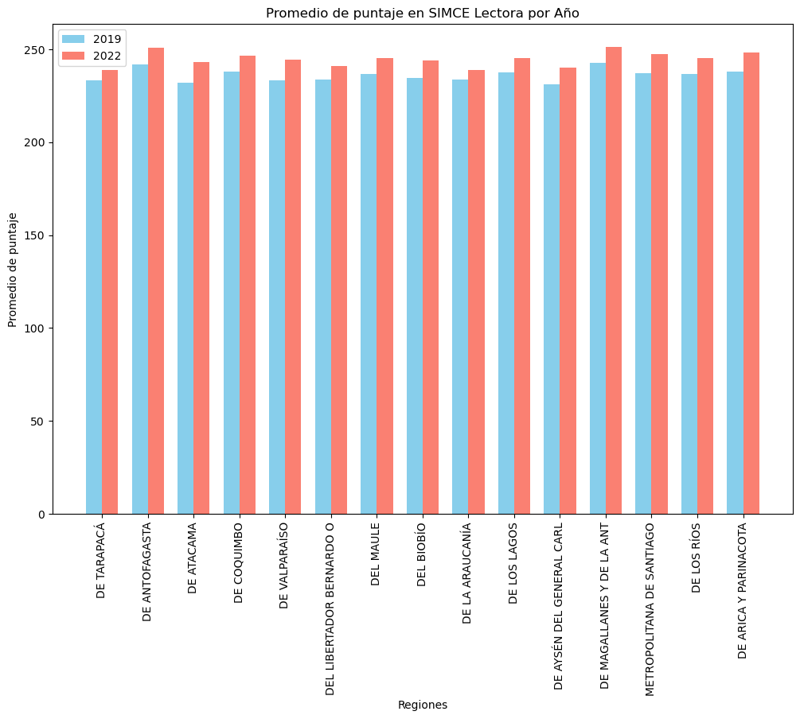
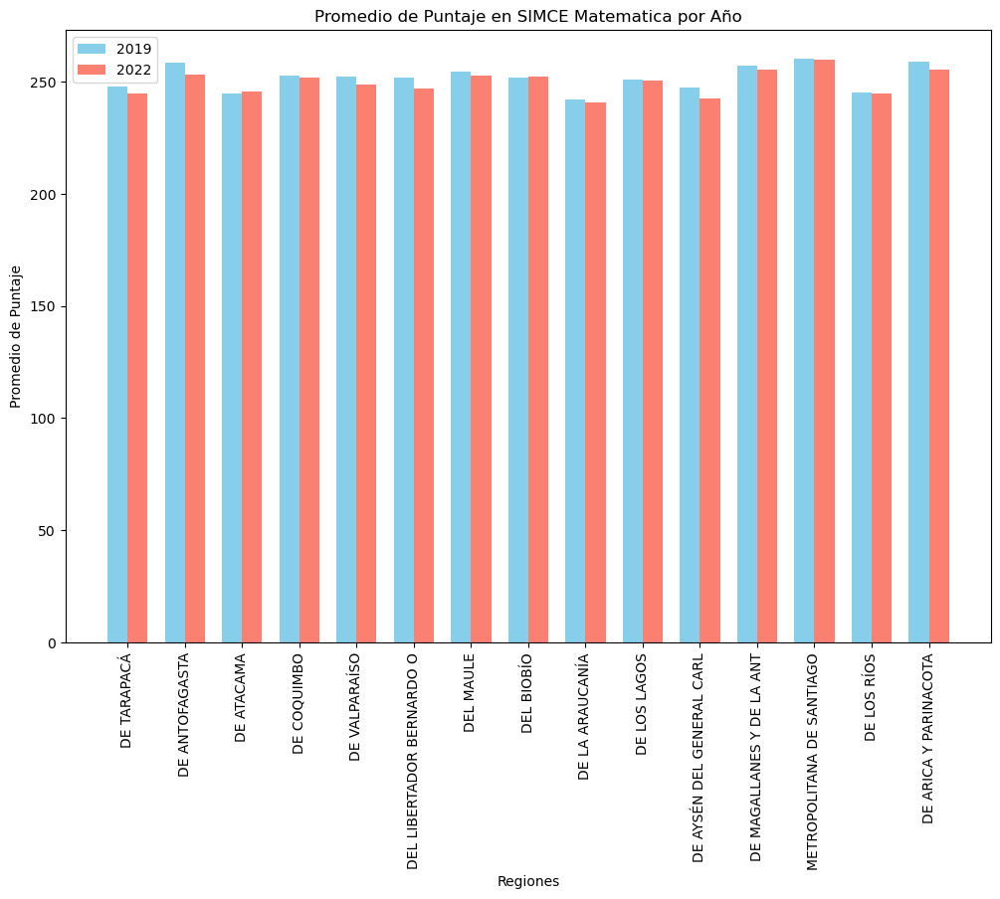
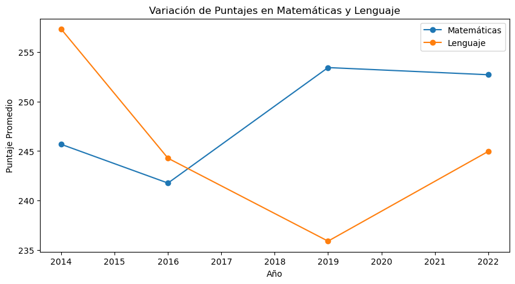
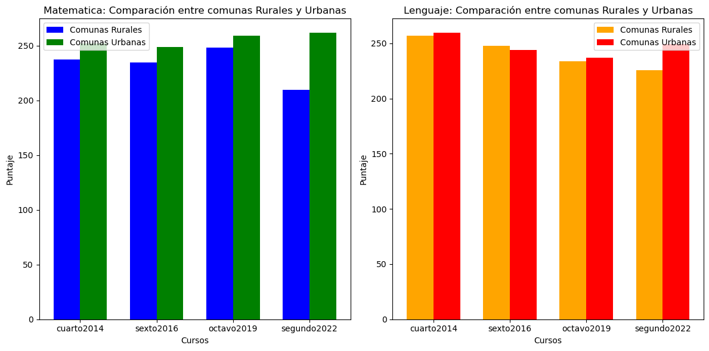

La educación es una herramienta que abre muchas ventanas, pero su mala administración puede dejar a muchos en desigualdad de oportunidades, incluso llegando a reflejar las inequidades sociales de un país. En nuestro país, Chile, sabemos que hay un esfuerzo de parte del gobierno en mejorar nuestro sistema, por ejemplo con las ya mencionadas evaluaciones SIMCE. Realmente nos interesa contribuir al mejoramiento del sistema de educación ya que juega un papel importante en el acceso a educación superior y al de un empleo digno.
Las cifras que vamos a analizar no son solo informes. Representan historias de niños y jóvenes con realidades muy distintas. Queremos entender el impacto de factores como vulnerabilidad y ruralidad afectan los puntajes y aprendizajes de los estudiantes e incluso evidenciar si al pasar del tiempo estas diferencias se mantienen.
Deseamos generar un cambio a través de nuestro análisis. Es muy fácil llegar y ver que existen desigualdades en el sistema educativo, pero queremos profundizar en el origen de estos problemas. Nuestra motivación existe en investigar las posibles disparidades del sistema de educación usando bases de datos públicas del gobierno y así saber qué áreas clave necesitan un enfoque de esfuerzos para potencialmente mejorar el nivel de educación. La educación es el arma más poderosa que puedes usar para cambiar el mundo." (Mandela).
El proyecto lo desarrollamos utilizando Python en varios Jupyter Notebooks, empleando diversas librerías especializadas en Ciencia de Datos, como Pandas, Numpy, Matplotlib, Seaborn
La pagina oficial del ministerio de educacion contiene todos los datos que necesitamos para este estudio, los puntajes SIMCE a nivel nacional, y ademas contiene variables valiosas para comparar mejor nuestros resultados. Para cumplir nuestros objetivos dejamos guardados para en el analisis 6 archivos conteniendo varios datos para extraer que nos serviran para el analisis conteniendo los siguientes cursos:
Al estar todos en el formato .xlsx, la libreria pandas sera critica en la lectura y manejo rapido de estos datos. Cada uno de estos archivos tienen varias columnas con datos que nos interesan comparar:
Como los datos ya venian de forma tabular solo hay que seleccionar las columnas que nos interesan creando un DataFrame de Pandas por cada curso, en el que cada fila representa un establecimiento, quedando de la siguiente manera:
| Nombre de la columna | nom_rbd | agno | cod_grupo | cod_rural_rbd | nom_reg_rbd |
|---|---|---|---|---|---|
| Información de la columna | Nombre del establecimiento | Año | Grado socioeconomico | Codigo de ruralidad | Nombre de la region |
| Dato de ejemplo | COLEGIO SAN JUAN | 2014 | Medio bajo | Urbano | REGIÓN DE LOS LAGOS |
| nom_com_rbd | nom_pro_rbd | cod_depe2 | prom_lect | prom_mate |
|---|---|---|---|---|
| Nombre de la comuna | Nombre de la provincia | Tipo de establecimiento | Promedio de lectura | Promedio de matematicas |
| ANCUD | CHILOÉ | Particular subvencionado | 211.0 | 201.0 |
Cabe destacar que prom_lect y prom_mate tienen distintas extensiones segun el curso.
Antes de pasar a nuestro analisis y preguntas objetivo, queremos estandarizar los datos que se muestran de manera distinta, como el cod_depe2, cod_grupo y cod_rural, los cuales no estan mostrados de manera numerica en los dataframes de 2014 y 2016, asi que los dejaremos de esta manera
Con los dataframes leidos y organizados, podemos pasar a la siguiente parte del analisis.
Para poder abarcar esta pregunta tomamos metricas como el promedio y desviacion estandar para una mejor asociacion y relacion de los Datos comparando entre las mejores y peores comunas por año
Debido a la remotidad de ese periodo, no existen datos sobre los SIMCE del 2020 y 2021, dejandonos el 2019 y el 2022 para comparar estadisticas. Estos años son clave para la comparacion ya que suceden justo antes y despues de la pandemia.  Los puntajes del SIMCE de comprension lectora sorprendentemente tendieron a un aumento entre el 2019 y el 2022 en todas las regiones, aunque no podemos garantizar que el mismo efecto se produce para los resultados matematicos, por lo que es necesario agrupar nuevamente los datos y generar un nuevo analisis.  A diferencia de comprension lectora, el SIMCE de matematicas muestra, en la mayoría de las regiones, una leve disminución de promedios post-pandemia. Aunque la diferencia que se muestra no es tan notoria como la de lectura, no se puede negar el descenso de puntajes. Para responder esta pregunta, si. Los puntajes varian antes y despues de pandemia aunque esa varianza dependio del tipo de prueba.
Ya que queremos comparar cursos de un nivel parecido (debido a que comparar distintos cursos puede crear una gran varianza que puede confundir los datos), lo mejor seria utilizar los datos de los cuartos basicos Primero, comparamos las materias por si solas.
Una simple observacion nos muestra como los resultados bajaron considerablemente en los cuartos basicos entre 2016 y 2022. Esto lo podemos dejar mas claro añadiendo un grafico con una regresion lineal (R^2)
Analizaremos si hay una relacion entre el tipo de colegio, si es subencionada, privado o estatal y sus puntajes generados. Veremos el promedio de ambos cursos en el tiempo, primero en los años 2014, luego en el 2016 y finalmente 2019. Para luego comparalos en total. Que conste que son los mismos curso de la rendicion del SIMCE. Quiere decir que los estamos siguendo en el tiempo, para ver su mejora, aparte comparamos simpre los 4 basicos para una mayor fiadibilidad de datos.
| Año | Bajo | Medio | Alto | 2014 | 230.85 | 251.99 | 287.74 |
|---|---|---|---|
| 2016 | 227.03 | 248.63 | 290.95 |
| 2019 | 234.56 | 243.03 | 258.87 |
| 2022 | 222.11 | 237.06 | 256.50 |
| Año | Bajo | Medio | Alto | 2014 | 246.51 | 262.43 | 291.63 |
|---|---|---|---|
| 2016 | 236.97 | 247.71 | 277.48 |
| 2019 | 224.69 | 227.31 | 239.82 |
| 2022 | 222.30 | 235.08 | 250.95 |
Tras el analisis, hubo un gran diferencia entre los colegios de nivel bajo, medio y alto. Pero logramos que este diferencia se va a cortando con los años. Los puntajes en promedio son de 10 pts superior por categoria. Los de bajo tiene -10 que los medio y los altos tienen un +10 en puntaje, en promedio. Aunque cuando los alumnos son mas chico hay una diferencia mayor.
Los graficos de 2014, 2016 y 2019 tienen una cantidad similar y alta de pruebas SIMCE rendidas (eje y: count), mientras que el 2ndo medio de 2022 tiene la cantidad mas baja de pruebas dadas. La curva se mantiene alrededor de los 250 puntos para todos menos el 2ndo medio de 2022, el cual el peak de la curva se concentra un poquito mas abajo. Al mismo tiempo, los minimos y maximos del 2022 se encuentran en puntos un poco mas altos que los demas (entre 170 y 370), mientras que los demas empiezas un poco antes del 150 y terminan antes del 350. En el grafico del 2016 es mas evidente de lo que se habla.
Para visualizarlo de una manera mejor, graficaremos la variacion de puntajes de matematica y lectura
Los puntajes de matematica suben respecto al 2014 y se mantienen despues del 2019, mientras que los de lectura bajan considerablemente respecto al 2014, y suben despues del 2019.
Al visuzalzar los resultados podemos analizar que en todos los años existe una diferencia muy marcada entre los distitnos niveles socioeconomico, siendo las clases mas altas las que poseen en promedio un mejor puntaje, lo que concluye que efectivamente va estar influenciado segun el grupo economico del estudiante su rendimiento en el SIMCE por ende en su educación.
Primero seleccionamos las comunas rurales y urbanas, segun un articulo de radioagricultura.cl  Al analizar ambos graficos podemos decir que si puede haber una diferencia entre los puntajes de de comunas rurales y urbanas en la prueba de matematicas, pero en la de lenguaje no se ve una gran diferencia, en el caso que si se ve una gran diferencia es en los segundos medios, talvez esto sea por la materia mas compleja que se les enseña , o talvez la pandemia afecto en mayor medida a las comunas rurales.
Puede que la limitación de datos, especialmente post-pandemia, ya que llevamos muy poco tiempo pasado después de aquella época, nos dé datos que no necesariamente reflejen la situación, ya sea actual o en un par de años más. También cabe destacar que hay más áreas que solo la matemática y de lectura que se pueden analizar, y sería incorrecto decir que hemos explorado los datos de todas las áreas de educación chilena.
También solo existe una cantidad limitada de información que podemos acceder a través de dataframes, por ejemplo, no tenemos idea de cómo saber el contexto fuera del colegio de cada joven que realizó estas pruebas. Aunque hayamos investigado más de 7 mil colegios, no podemos generalizar sobre datos los cuales no tenemos acceso.
Aun así, creemos que contamos con una base de datos suficientemente grande y de bastantes años para obtener conclusiones acertadas sobre la realidad de nuestro país, y que los casos límite no deberían influir en cómo deberíamos acercarnos a las problemáticas.
Tras realizar el análisis sobre los datos podemos concluir que las desigualdades del sistema educativo son en su mayoría sistemáticas, pero que también existen oportunidades claras para generar cambios y cerrar las brechas existentes.
Hemos identificado, tras la exploración crítica de datos, los patrones clave que muestran cuándo y dónde los puntajes de medición SIMCE bajan, destacando en las zonas más vulnerables y rurales del país (y no ayuda que la brecha creció post-pandemia). Proponemos las siguientes acciones como las más importantes:
Somos conscientes de que estas propuestas no reflejarán cambios a corto plazo, pero creemos que, en base a lo investigado, son un excelente punto de partida para cerrar la brecha de disparidad educativa. Lo más importante sobre todo esto, es que esperamos que nuestro proyecto no sea visto solamente como una exploración de datos, sino como una guía de dónde iniciar cambios para construir un Chile mejor y más educado.
Todas las fuentes de datos he información relacionada a esta fue directamente extraída de las bases que proporciona el gobierno de chile sobre los datos recopilados del SIMCE, ademas agremagamos otras fuentes de informacion para guiarnos en nuestros distintos analisis.
El proyecto cuenta con 2 repositorios, el que tiene el código, y el de la presentación, una vez el código sea público será posible replicar el proyecto; aunque es necesario mucho tiempo de espera para tener toda la información.